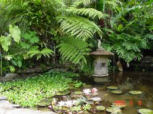
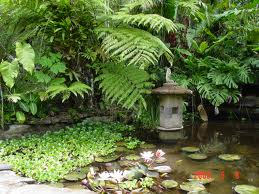

A little of our history
Ruth and Charles Larabee, founders of San Diego Botanic Garden, were both born in the Midwest and became heirs to considerable family fortunes. Ruth Robertson Baird was born in 1904, the daughter of a successful bank owner in Kansas City, Missouri, whose holdings included several thousand acres of farmland in the south plains of Texas. She was well educated, graduating with a major in Latin from Vassar College in 1926. Charles Wright Larabee was born in 1901 in Stafford, Kansas, where his father and uncle established a prosperous bank. Ruth and Charles grew up within a block of each other in Kansas City, Missouri, and they married in June 1926, just days after her graduation from Vassar. Ruth was a public school teacher, while Charles was co-owner of a nursery in Kansas City. During the late 1930s and mid-40s, shortly after he inherited a fortune of his own, Charles gave lectures on gardening topics and traveled extensively throughout the Southwest, capturing stunning black and white photographs of scenery, cowboys, ranchers, rodeos, and indigenous people.
In 1942/43, Ruth Larabee purchased 26.5 acres of ranch land in Encinitas, California and together they made their home in the modest dwelling we now know as the Larabee House. Since neither of the Larabees was gainfully employed during residence here, there was ample time to travel, acquire plants, and establish gardens on the property. They did not have children of their own, but generously sponsored young students involved in scouting, treating them to camping adventures and river trips to share their love for the outdoors. After only six years on the ranch, Charles moved to the marina on Balboa Island in Newport Beach, California, and in 1950 he and Ruth were divorced. By then, Charles was widely known for his photography, had become an expert lecturer on the Old West, and guided boating expeditions on the Green and Colorado Rivers. Ruth stayed on the ranch for another six years, cultivating the gardens and nurturing its wildlife resources. She was particularly fond of the quail and collaborated with fish and game officials to enhance their survival.


 
